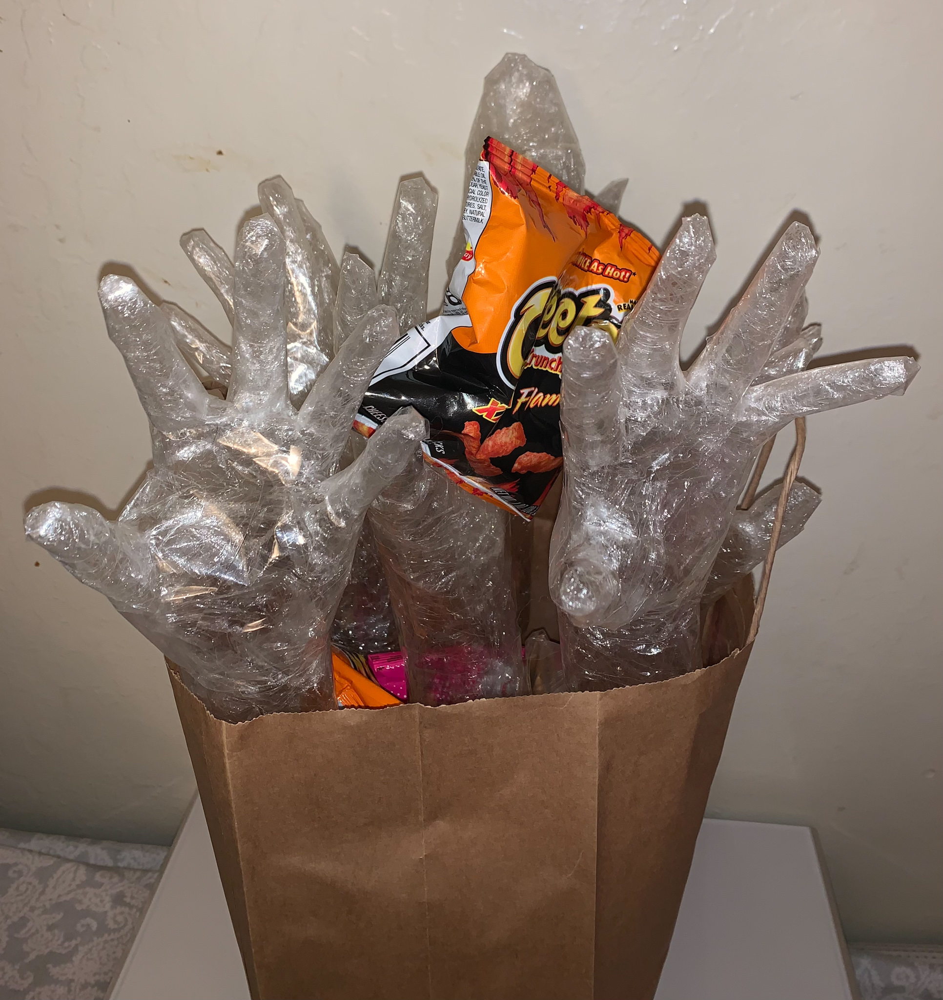
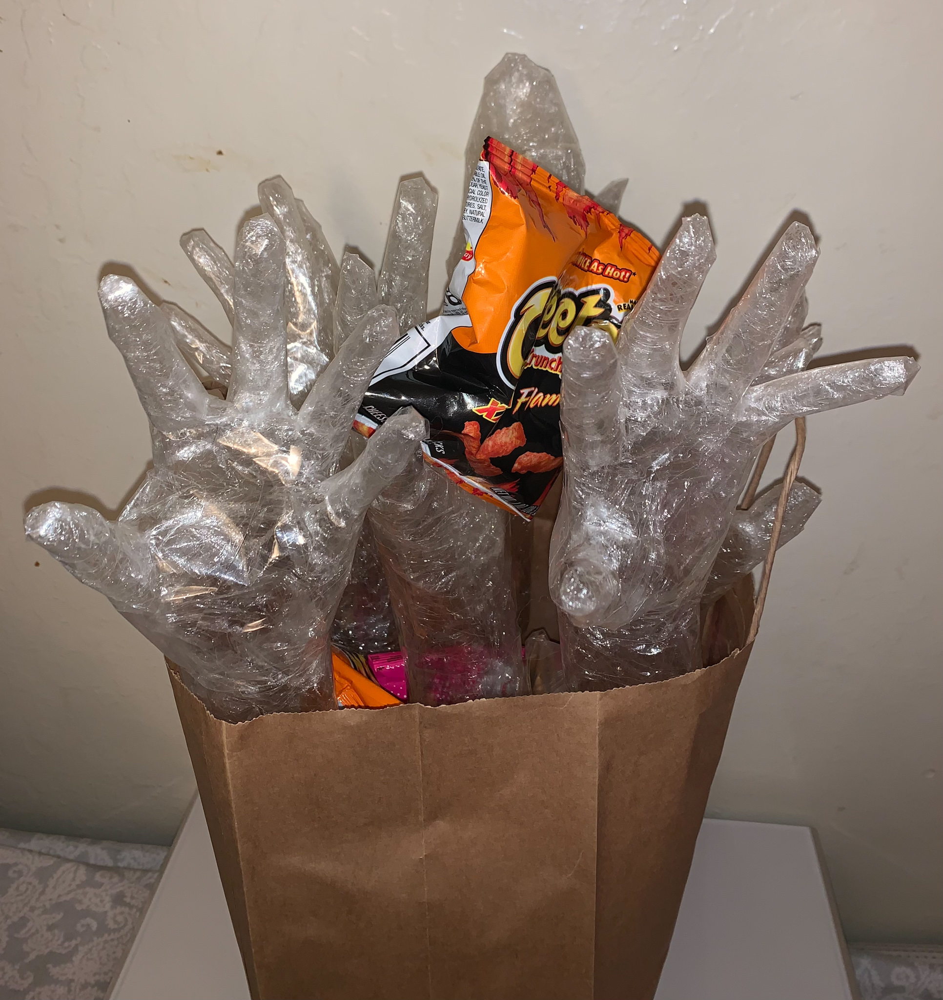

Hunrgy for Munchies
2020, Drawing

 


Process

Art 68: Beginning Scuplture | Morph It - fabricated packing tape sculpture
For this Morph It project, it was challenging at first for me to figure out what I wanted to do. The concept was a different realm of experience for me, however, after receiving advice from the professor, I was able to get a clear idea of the concept. The theme of this project is to incorporate how people get hungry and just want to munch on snacks. The emotions I wanted to evoke are hunger, cravings, adrenaline, sadness, happiness, and confusion which can be interpreted by multiple people at different times. Women on their periods can be cravings for snacks, but they don’t have a specific food they want so they just want everything they can get. The paper bag is what you would use at a grocery store and the hands popping out trying to grab any snack it can grab, bringing it bag into the bag represents hunger. For the hands, I used plastic wrap around my left hand and tapped all around those parts. It was difficult to remove by hand without breaking the shape and tapping it back together perfectly.
I think this project was interesting and fun to do because you’re taking a shape and sculpting around it with tape. Sculpting tape is time-consuming, but it has an enjoyment of passing time. The idea of the assignment doesn’t need to be different, because it has concepts of challenges and creativity. It shouldn’t be changed for this class. In regard to my final project, I could’ve done the taping of the fingers better if I was doing it on another person, but I was doing it on myself so more challenging to do as I only had one hand to cut and tape. However, I believe I did particularly well for taping the hand myself pretty well. If I were to do this project again, I would have another person as the model and maybe tape a bag instead of having it as a found object so that I can have the snacks inside be seen from the outside.